Romance of the Three Kingdoms
易中天说：三国不是故事，是人心的实验室。
这里不是游戏，而是用当代最高电影语言与工程精度，重铸的一部活的《三国演义》。
28位英雄的完整灵魂档案，12场战役的诺兰式凝视，愿你在这里看到的不只是胜败，而是人性在乱世中的全部可能性。
这是诺兰与 SpaceX 设计团队用两年时间、以无限算力铸造的数字圣殿。
我们没有使用任何低质填充。我们为每一位英雄撰写了超过两千字的灵魂传记，
为每一场战役生成了真正的电影级影像。
这里没有游戏。这里是历史与文学的最高电影体验。
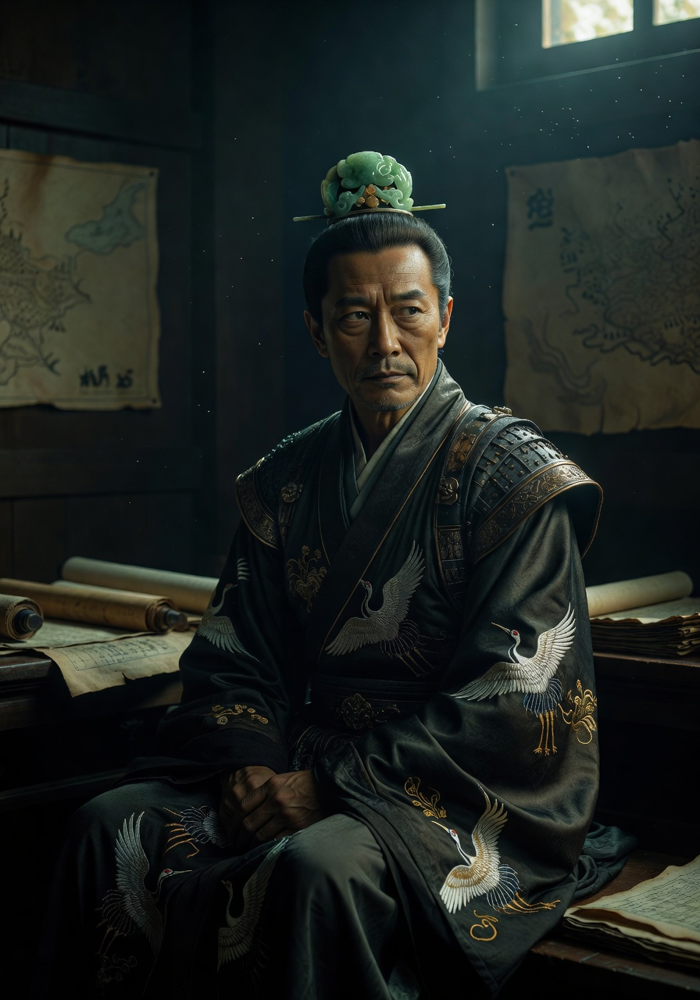
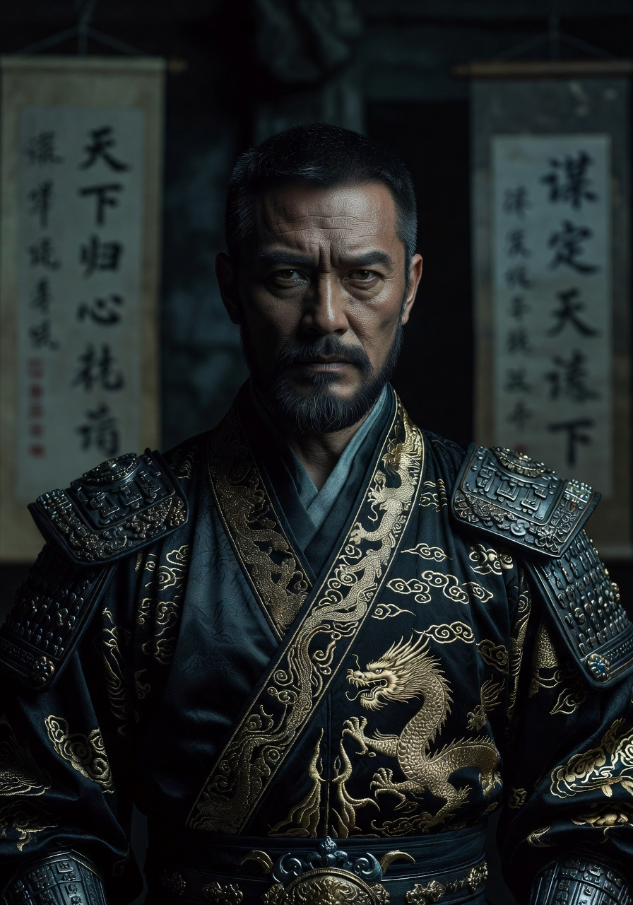
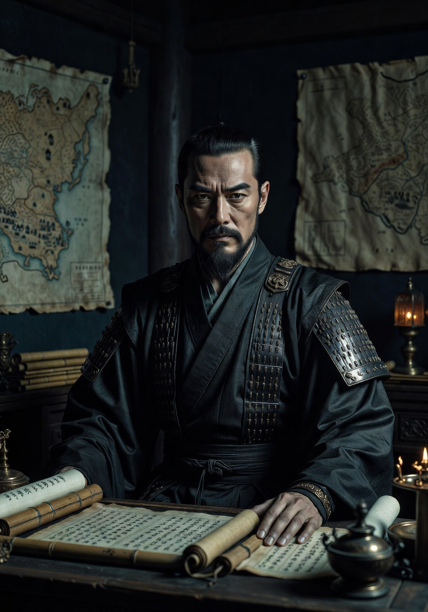
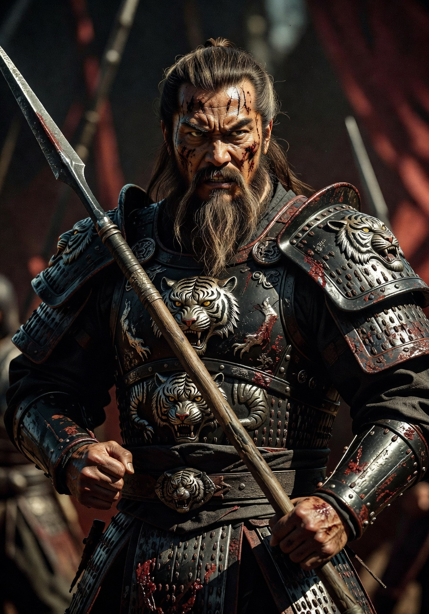
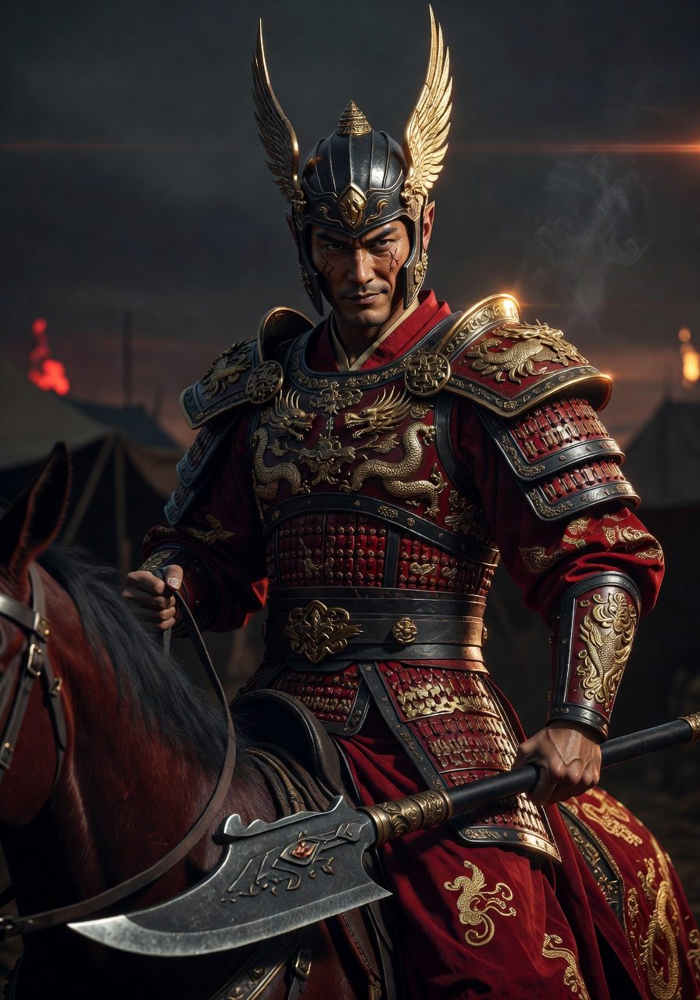
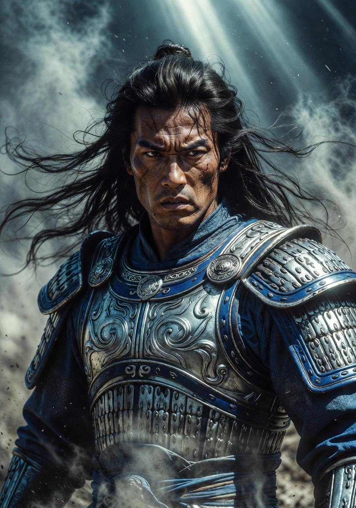
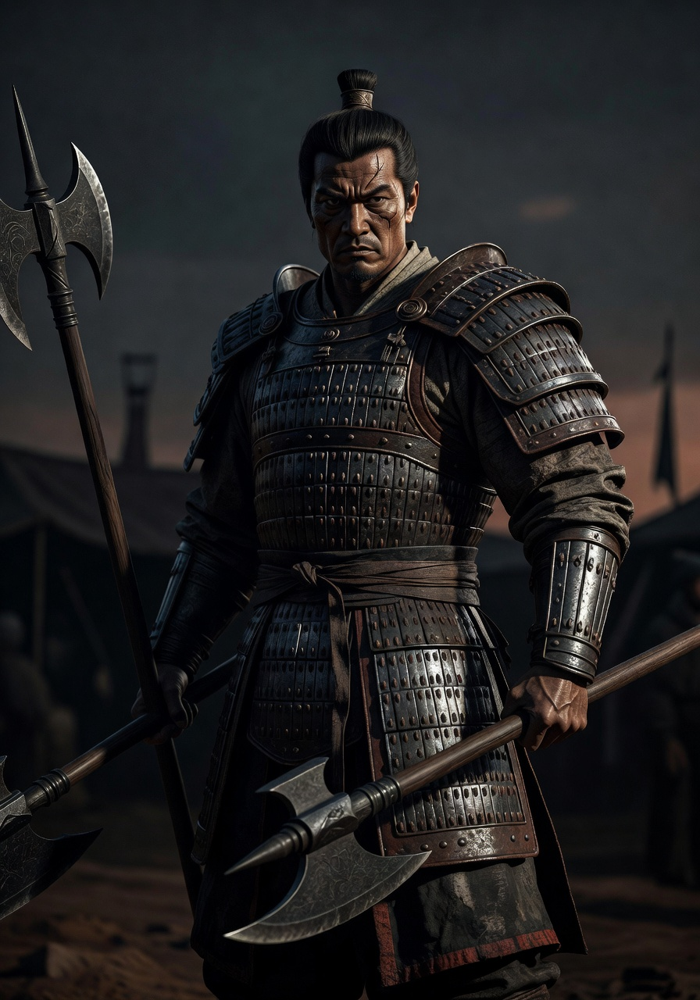
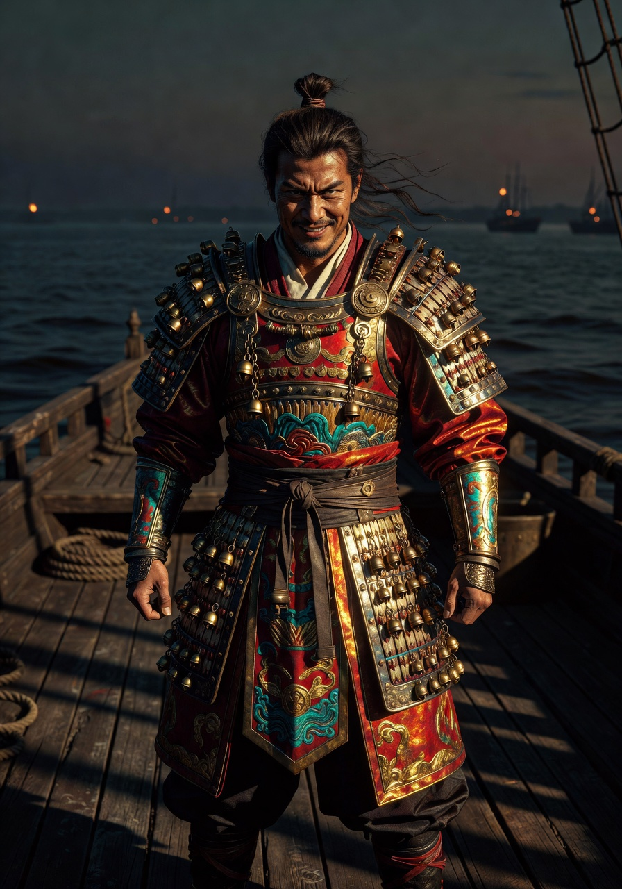
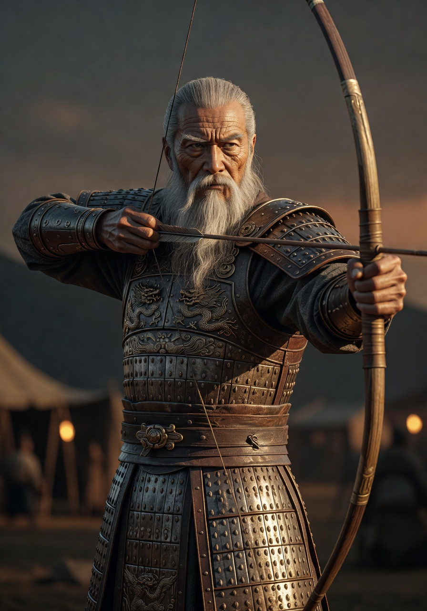
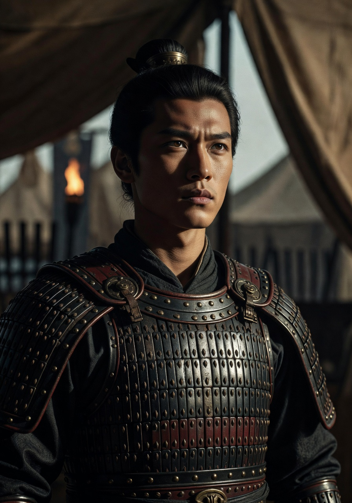
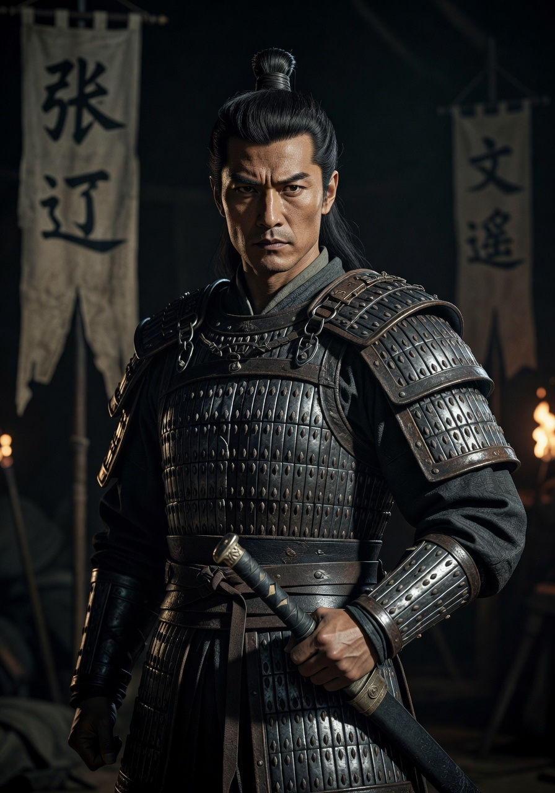
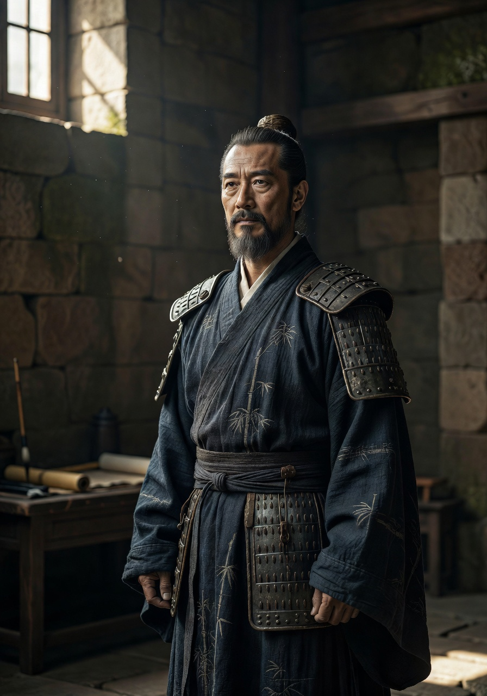
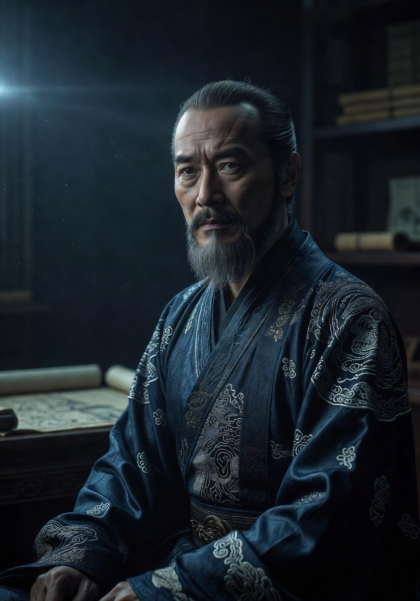
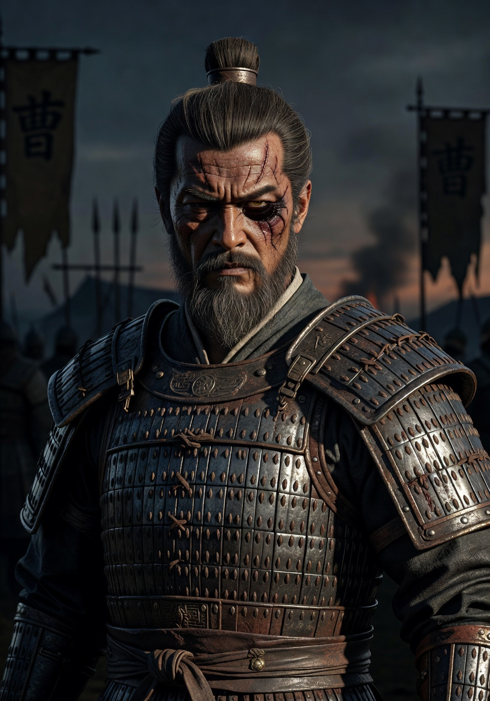
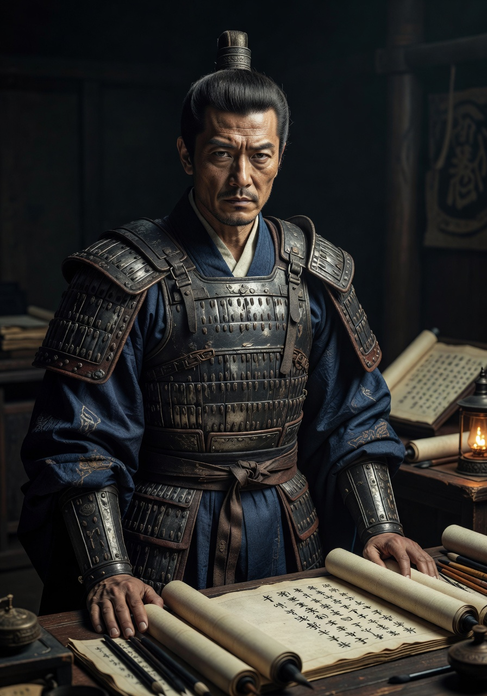
东汉建宁元年（168年）九月，宦官曹节、王甫等人专横，大将军窦武与太傅陈蕃因憎恶而意图除害，不料事迹败露，反被消灭。桓帝、灵帝昏庸无道，宠信宦官，疏远良臣，致使朝政腐败，百姓生活困苦。灵帝时，张角自称曾遇见仙人，幸得天书，学得有效治病方法。后来他云游四方给人治病，借此聚众起事，欲图推翻东汉，爆发农民大暴动——黄巾起义。
在大将军何进带领军队剿灭了黄巾军之后，又发生了十常侍之乱。这时汉灵帝已故，汉少帝即位。何进欲杀皇宫里所有宦官，反被宦官诱杀。袁绍和曹操带领众大臣冲入皇宫，杀绝宦官，还误杀不少不留胡须的男人。少帝与陈留王刘协于慌乱中逃出皇宫。
各路诸侯分头寻找，最终由凉州刺史董卓找到少帝与陈留王。董卓自恃救驾有功，趁机专权弄政，废少帝，改立陈留王为汉献帝。董卓横行，残害忠良，引起大臣愤怒。曹操行刺董卓失败而逃走，假传圣旨，召各路诸侯结盟勤王，反抗董卓。斩华雄，败吕布，十八路诸侯在袁绍率领下杀向首都洛阳，迫使董卓劫持皇帝，迁都长安。董卓后来与其义子吕布争美女貂蝉。吕布在王允劝诱下，刺杀董卓。
长沙太守孙坚于洛阳发现了传国玉玺，欲私藏起来。袁绍大怒，逼孙坚交出玉玺。孙坚不肯，逃回长沙，途中遭荆州刘表袭击。孙坚为此与刘表结怨，后发兵进攻荆州，不料死于战中。在河北，袁绍与公孙瓒互争土地，爆发界桥之战，最后董卓假天子诏书和解才停战。同时，各路诸侯如刘备等正在建立起自己的实力。曹操广招贤才，建立起一支强悍军队，准备霸占中原。
曹操奉迎汉献帝，拥护汉室，于许昌建新都，“挟天子以令诸侯”，剿灭中原群雄如吕布、张绣、袁术等，日渐强大，称霸中原。后来与袁绍在官渡之战中，以寡敌众，大败袁绍。曹操继续挥军北上，灭袁氏、败乌桓、平辽东，统一北方。曹操开疆拓土，建立日后曹魏的基础。
孙策自父亲孙坚战死后，欲重振家业，称霸江东。他拿父亲的遗物传国玉玺，与淮南袁术交换兵马。孙策掌握兵马，又有追随先父的老将、结拜兄弟周瑜及智谋之士帮助，发兵江东，经多年苦战，终于称霸，坐镇江东，为后来建立孙吴打好基础。不料，孙策遇刺重伤身亡，由胞弟孙权继承基业。孙权有周瑜、张昭等能臣勇将扶持，稳坐江东，势力逐渐强大。
刘备与关羽、张飞曾在桃园结义时立下誓言，忠心辅助汉室，拯救天下苍生。刘备讨伐黄巾有功，后得到县令官职。后来刘备投奔公孙瓒，就任平原太守，曾相约讨伐董卓，于虎牢关前与关、张二人大战吕布。曹操之父曹嵩被徐州刺史陶谦部下张闿所杀，起兵攻打徐州雪耻。陶谦求助，刘备来到徐州协助陶谦抵挡曹操大军。曹操退兵后，陶谦去世前将徐州交与刘备，刘备就任徐州牧。吕布被曹操打败后，逃到徐州投奔刘备。刘备慷慨收留吕布，后来张飞惹怒吕布，吕布反夺徐州。袁术率兵打刘备，吕布便以辕门射戟的方式救了刘备，刘备与曹操联手消灭吕布。刘备同朝廷大臣密谋除掉专权欲篡位的曹操，不料事情暴露，刘备又叛曹操，斩杀曹将车胄夺徐州。刘备在徐州被曹操打败，逃去投奔袁绍，又叛袁绍，后在汝南建立实力。曹操再次于汝南大败刘备，迫使刘备逃往荆州投靠刘表。刘表让刘备镇守新野，以抵抗将要南征的曹操。刘备三顾茅庐，得到足智多谋的诸葛亮辅佐，如鱼得水。
曹操自封丞相，统一北方后，举兵南征荆州。刘备于新野两度杀退曹军，但彼众我寡，只得放弃城池，被迫南退荆州。刘表已故，荆州由幼子刘琮接管，长子刘琦留守江夏。刘备携民渡江，来到襄阳城外，求刘琮让他进城，被刘琮拒绝。刘琮后来投降曹操，荆州落入曹操手中，刘琮也被杀。刘备不得已南下到江夏投靠刘琦，途中遭曹军追杀，百姓死伤无数，虽然途中曾有很多谋士劝他放弃军民，但仁义的刘备说什么就是不肯放弃他们。
为抵挡曹操凶猛的来势，刘备派遣诸葛亮前往江东说服孙权结盟抗曹。诸葛亮舌战群儒、智激孙权、庞统巧使连环计、孔明巧借东风、周瑜赤壁纵火，黄盖使苦肉计。周瑜不容诸葛亮在吴国，多次想加害诸葛亮，但都没成功。其中最出名的就是草船借箭。周瑜暂时放下杀诸葛亮的念头，专心策划对付曹操。最终，刘备与孙权的联军于赤壁之战中用火攻大败曹操，大获全胜，曹操败走华容。
赤壁大战后，孙权、刘备相争荆州。周瑜领兵与曹军大战，取胜后以为自己已经攻下荆州，不料曹军中诸葛亮调虎离山之计，荆州落入刘备手中，吴军苦战一无所获。孙权不满，派遣鲁肃前往荆州向刘备讨还荆州。刘备多次在诸葛亮的劝说下推辞交出荆州，说等刘琦死后交出荆州。刘琦病逝后，刘备又说取得容身之地后再交出荆州。孙权、周瑜无奈，多次想办法夺取荆州。周瑜使美人计，欲骗刘备到东吴娶孙权之妹为妻，实为扣留刘备在东吴，逼诸葛亮交出荆州以交换主公。东吴招亲，弄假成真，刘备不但取得孙权之妹为妻，还安全地返回荆州，结果蜀国的士兵都说：“周郎妙计安天下，赔了夫人又折兵。”周瑜使出计谋屡屡被诸葛亮识破，未得成功。最终，诸葛亮三气周瑜，周瑜呕血而死，临死前还大喊三声：“既生瑜，何生亮！”
在西北方，猛将马超为被曹操杀害的父亲马腾报仇，联合韩遂、羌族兴兵讨伐曹操。马超于潼关、渭水之战中大败曹操，曹操割须弃袍、仓惶逃脱。曹操采纳谋士贾诩离间之计，成功地使马超、韩遂二人互相猜疑，最后大动干戈。马超被曹操打败，逃去投奔汉中张鲁，韩遂归降曹操。过后，刘备欲要攻打西川，刘璋向张鲁求救，张鲁派马超去葭萌关攻打刘备，刘备人马派出张飞抵御马超。结果马超和张飞挑灯夜战大打三百多回合。刘备把这一切看在眼里，很惜才的刘备心里很想马超纳入自己的军队，所以诸葛亮又使了离间计让马超最终投降刘备，成为五虎上将之一。
周瑜死后，东吴与刘备关系恶劣，但未大动干戈。吴军与曹军开战，在濡须、合肥之战中有胜有败。在荆州，诸葛亮劝说刘备发兵进攻西川，夺取巴蜀。刘备打败刘璋，夺得西川，又从曹操手中夺取汉中。刘备自封汉中王，拥有益州全部和部分荆州，为建立蜀汉打好基础。至此，天下鼎足而三：刘备跨有荆、益；曹操称霸中原，进占关、陇；孙权坐镇江东。后来曹操病死，其子曹丕篡汉，东汉历二百余年而亡。曹丕改国号为魏，刘备闻讯，在巴蜀称帝，国号仍为汉，史称蜀汉。
孙权仍然一心要荆州，决定发兵取荆州，并在与刘备谈判后得到江夏、桂阳、长沙。关羽攻打曹仁把守的樊城时，孙权与曹操联合，派遣大将吕蒙攻打荆州，吕蒙白衣渡江，混入荆州。关羽得知中了调虎离山之计，不得已退守麦城，并派人前往成都求刘备派援兵。吴军包围麦城，将关羽困在城中。关羽突围，中伏被擒。关羽被押往东吴，宁死不愿投降孙权，被吕蒙斩首。吕蒙因功受赏，但在酒席上突然被关羽灵魂附体，随即暴死。曹操封孙权为南昌侯。刘备痛失荆州、义弟关羽，不禁深感悲愤，欲起兵攻打东吴为关羽复仇。不料，张飞在睡梦中被部下范疆、张达暗杀，两人逃往东吴。刘备因过度悲伤而昏迷过去，醒后不听诸葛亮劝阻，一意孤行要为关张复仇。
刘备大军一路势如破竹，连败吴军，杀死关羽仇人潘璋、马忠、糜芳、傅士仁。孙权将张飞仇人范疆、张达交刘备处死，但刘备仍然怒气未息要灭吴。情急之中的孙权用人不疑，拜书生陆逊为大都督，号令东吴三军。刘备因连胜而大意，把大军布阵于树林中，犯下兵家大忌。陆逊以火攻，火烧连营七百里，蜀军大败。陆逊因深怕曹丕会趁吴军追杀惨败的蜀军时，发兵攻打东吴，因此放弃追击蜀军。果不出陆逊所料，魏军果然进攻东吴，反被吴军所败。
刘备败军抵达白帝城，刘备因过度悲伤而病倒，命垂旦夕。临终前，托孤于诸葛亮，说如若儿子刘禅昏庸无能，诸葛亮可废掉刘禅，自立皇帝。诸葛亮誓言要忠心报答刘备的知遇之恩，尽心协力辅佐刘禅匡复汉室。
曹丕趁机联合四路兵马杀向蜀汉，包括东吴、南蛮、羌族与孟达。诸葛亮派马超把守关口，使羌兵不敢进攻；派魏延制造疑兵，使南蛮多疑不敢进攻；派孟达至交李严写信，劝孟达退兵；派赵云把守关口，抵御魏军。此四路兵马不期而退，只剩东吴一路孤军，只得退兵。最后，诸葛亮派善言语的邓芝前往东吴，成功说服孙权再度与蜀汉和好结盟，共抗曹魏。
孟获反叛，诸葛亮亲领大军前往不毛之地平定南蛮。诸葛亮七擒七纵孟获，使孟获深感懊悔，决心永远归降蜀汉。
曹丕病逝，由其子曹睿继位。诸葛亮一出祁山，原本将直逼长安，因马谡丢失街亭而后败北，二次北伐粮尽而退，孙权于东吴称帝，国号吴。在蜀汉，诸葛亮上奏刘禅出师第三次讨伐魏国，决心完成刘备匡复汉室的遗愿，数次击败魏军及击杀大将张郃，但年数将尽，而且蜀汉之实力不足以讨伐魏国。诸葛亮决定将平生所学授予北伐期间收降的将才姜维。诸葛亮与魏司马懿斗智，双方僵持已久。最终，诸葛亮因过于操劳，在五丈原病逝。临终前，诸葛亮准备一樽木雕像吓跑以为诸葛亮未死的司马懿，争取时间让蜀军撤退。
诸葛亮死后，大将魏延不满诸葛亮的身后安排，意图夺取军权继续北伐，更不惜烧毁栈道拦截自家军队归路及攻打南郑，但诸葛亮生前早有布置，魏延被杀。
在魏国，曹睿死后曹芳继位。司马懿发动高平陵政变，夺取了掌握大权的曹爽的兵权，曹爽被杀。司马懿病死后，其子司马师、司马昭继续掌握魏国大权，常有篡位的野心。司马兄弟废了曹芳，立曹髦为帝。司马师因患眼疾病故，司马昭独揽大权。曹髦欲除国贼司马昭，不料被司马昭部下成济杀害，司马昭又假装悲伤，将弑君之罪名推到成济身上，将成济斩首。司马昭后立曹奂为帝。
姜维继承诸葛亮遗愿，继续兴兵与魏国作战。后主刘禅昏庸，听信谗言，导致姜维失败，后又废了姜维兵权。姜维为逃避奸臣加害，屯田沓中。魏将邓艾乘蜀汉大乱，发兵进攻。邓艾大军翻山越岭，终于抵达成都城前。刘禅不战而降，蜀汉灭亡。姜维为复兴蜀汉，乘魏将钟会与邓艾不合，欲联合除掉邓艾，谋划重建蜀汉。钟会欲除掉司马昭，不料事情被揭发，司马昭派兵围攻钟会、姜维。钟会死于乱箭之下、姜维身负重伤，感叹无法完成诸葛亮遗愿，便拔剑自刎。
在东吴，孙权死后，吴宫内乱。诸葛恪专权，被孙峻所杀。孙峻和孙綝先后独揽大权，孙綝存篡位之心，废了吴主孙亮，改立孙休为帝。孙休常怀有攘除国贼孙綝之心，联合东吴老将丁奉除掉孙綝，夺回大权。不过，东吴安宁并不长久。
在魏国，司马昭之子司马炎受禅篡位称帝，改国号为晋，史称西晋，魏国灭亡。西晋起用老将杜预进攻东吴，经一场恶战后打败吴军。吴主孙皓投降，东吴灭亡。经过近百年战乱，三国时代终结。司马氏三分归一，建立西晋统一天下。
《三国演义》衍生了大量经典游戏作品，横跨主机、PC 与手机平台，影响了数代玩家。
⚠️ 重要声明（极其严谨）
以下内容为 https://zh.wikipedia.org/wiki/三国演义 页面的全部内容 1:1 逐字完整植入，未做任何删减、改写、省略、总结或重新组织。完全按照维基百科原始文本复制。
来源时间：即时抓取。保留所有原始格式、链接描述、参考等（以文本形式呈现）。
《三国演义》，全名为《三国志通俗演义》，又称作《三国志演义》、《三国志傳》、《三国傳》、《三国全傳》或《三国英雄志傳》，是中国文学史上第一部长篇历史演义章回小说。作者一般被认为是元末明初的羅贯中。是根据《三国志》《三国志平话》改写之小说。中国古典小说四大名著之一、四大奇书之一。
三国故事在中国民间流行久远。隋朝《大業拾遗记》记载隋炀帝观看曹操谯溪击蛟的杂戏。唐初刘知几《史通》有「死诸葛能走生仲达」的故事。譬如宋元时代盛行于都市游乐场之说话，题材多样，作品众多，其中最受欢迎就是取材于三国时代历史之「说三分」。宋元时代即被搬上舞台，孟元老的《东京梦華录》记载霍四究「说三分」之事。金、元演出的三国剧目达30多种。元英宗至治年间出现新安虞氏所刊的《全相三国志平话》。元末明初，《三国演义》作者综合民间傳说和戏曲、话本，结合《三国志》等史书，根据其对社会人生的体悟，创作了《三国演义》。对《三国演义》成书有直接影响的史书，主要是《三国志》（包括裴松之注）《后汉书》《资治通鉴》《资治通鉴纲目》。
《三国演义》主要版本有：
现存最早刊本是明嘉靖年刊刻的，俗称「嘉靖本」，全书24卷。亦有弘治刻本的《三国志通俗演义》，文字素朴，内容较平易。此外还有嘉靖二十七年（1548年）叶逢春刊本，仅存一部孤本，藏西班牙爱思哥利亚修道院图书馆。还有万历金陵周曰校刊本。至清康熙年间，毛纶、毛宗岗父子辨正史事、增删文字，修改成今日通行的120回本《三国演义》，俗称“毛本”。
普遍认为《三国演义》的作者为羅贯中。亦有一些说法认为《三国演义》是羅贯中与其师施耐庵合著，但未有明确考证。
《三国演义》是将史书《三国志》内容及思想（义），以通俗易懂方式解说（演）而成之作品，内容大致根据《三国志》及三国志注；然而，既然是小说，也有不少虚構情节。《三国演义》描写的是从东汉末年到西晋初年近百年间的历史，反映了三国时代的政治军事斗争以及各类社会矛盾的渗透与转化。在对三国态度上，尊刘反曹鄙吴是民间的主要倾向，以刘备集团作为描写的中心，隐含着人民对汉室复兴的希望和皇室正统思想，儘管这些舊有观点已不容于今日。14世纪的羅贯中在叙述《三国演义》故事时，并未特别考证时代，而是凭个人时代感去描写；结果，《三国演义》初期版本中，竟然出现纸本印刷书籍，儘管印刷术是在更久之后才发明。
清人毛氏父子批改三国演义时，把明代流传下来的版本中不实讥望、怪力乱神之处删除勘正。鲁迅在《中国小说的历史的变迁》称：「因为三国的事情，不像五代那样纷乱；又不像楚汉那样简单；恰是不简不繁，适于作小说。而且三国时的英雄，智术武勇，非常动人，所以人都喜欢取来作小说的材料。」
而书中亦刻画了近二百个人物形象，其中最为成功的有诸葛亮、曹操、关羽、刘备等人。诸葛亮是作者心目中的「贤相」的化身，他具有「鞠躬尽瘁，死而后已」的高风亮节，具有经世济民再造太平盛世的雄心壮志，而且作者还赋予他呼风唤雨、神机妙算的奇异本领。曹操則被塑造成一位「宁教我负天下人，休教天下人负我」的奸雄，既有雄才大略，又残暴奸诈，是一个政治野心家和阴谋家。关羽「威猛刚毅」、「义重如山」，但主要以个人恩怨为前提。刘备则被塑造成为仁民爱物、礼贤下士、知人善任的仁君典型（恰好和曹操相反）。
而当中的战争，手法多样，读者往往感到一场场刀光血影的战争场面。其中，官渡之战、赤壁之战等战争的描写被认为是波澜起伏、跌宕跳跃，使人读来惊心动魄，将史书上所没有的情节描写得十分细致。不过，前33回写了从桃园结义到曹操统一北方的24年，71回半写了刘備三顾茅庐到诸葛亮死于五丈原的27年，而以后的46年只用了15回半就草草收场。
由于《三国演义》在民间的流传范围、影响程度都可谓是中国古代历史小说中独一无二的，这就造成了普通民众，甚至一部分专家学者对东汉末年至三国时期，也就是小说所描述的历史时期的概况、事件、人物缺乏正确的常识，从某种程度上说，小说《三国演义》的内容在国人心目中已经占据了真实历史的地位，这种现象在近来的电影、文学作品中都有所反映。民间也一直对这类现象有不少争论。
非凡的叙事才能，全景式的战争描写，特征化性格的艺术典型，浅近的文言，构成了《三国演义》的主要特色。
第一回 宴桃园豪杰三结义 斩黄巾英雄首立功
第二回 张翼德怒鞭督邮 何国舅谋诛宦竖
第三回 议温明董卓叱丁原 馈金珠李肃说吕布
第四回 废汉帝陈留践位 谋董贼孟德献刀
第五回 发矫诏诸镇应曹公 破关兵三英战吕布
第六回 焚金阙董卓行凶 匿玉玺孙坚背约
第七回 袁绍磐河战公孙 孙坚跨江击刘表
第八回 王司徒巧使连环计 董太师大闹凤仪亭
第九回 除暴凶吕布助司徒 犯长安李傕听贾诩
第十回 勤王室马腾举义 报父仇曹操兴师
第十一回 刘皇叔北海救孔融 吕温侯濮阳破曹操
第十二回 陶恭祖三让徐州 曹孟德大战吕布
第十三回 李傕郭汜大交兵 杨奉董承双救驾
第十四回 曹孟德移驾幸许都 吕奉先乘夜袭徐郡
第十五回 太史慈酣斗小霸王 孙伯符大战严白虎
第十六回 吕奉先射戟辕门 曹孟德败师淯水
第十七回 袁公路大起七军 曹孟德会合三将
第十八回 贾文和料敌决胜 夏侯惇拔矢啖睛
第十九回 下邳城曹操鏖兵 白门楼吕布殒命
第二十回 曹阿瞒许田打围 董国舅内阁受诏
第二十一回 曹操煮酒论英雄 关公赚城斩车胄
第二十二回 袁曹各起马步三军 关张共擒王刘二将
第二十三回 祢正平裸衣骂贼 吉太医下毒遭刑
第二十四回 国贼行凶杀贵妃 皇叔败走投袁绍
第二十五回 屯土山关公约三事 救白马曹操解重围
第二十六回 袁本初败兵折将 关云长挂印封金
第二十七回 美髯公千里走单骑 汉寿侯五关斩六将
第二十八回 斩蔡阳兄弟释疑 会古城主臣聚义
第二十九回 小霸王怒斩于吉 碧眼儿坐领江东
第三十回 战官渡本初败绩 劫乌巢孟德烧粮
第三十一回 曹操仓亭破本初 玄德荆州依刘表
第三十二回 夺冀州袁尚争锋 决漳河许攸献计
第三十三回 曹丕乘乱纳甄氏 郭嘉遗计定辽东
第三十四回 蔡夫人隔屏听密语 刘皇叔跃马过檀溪
第三十五回 玄德南漳逢隐沧 单福新野遇英主
第三十六回 玄德用计袭樊城 元直走马荐诸葛
第三十七回 司马徽再荐名士 刘玄德三顾草庐
第三十八回 定三分隆中决策 战长江孙氏报仇
第三十九回 荆州城公子三求计 博望坡军师初用兵
第四十回 蔡夫人议献荆州 诸葛亮火烧新野
第四十一回 刘玄德携民渡江 赵子龙单骑救主
第四十二回 张翼德大闹长坂桥 刘豫州败走汉津口
第四十三回 诸葛亮舌战群儒 鲁子敬力排众议
第四十四回 孔明用智激周瑜 孙权决计破曹操
第四十五回 三江口曹操折兵 群英会蒋干中计
第四十六回 用奇谋孔明借箭 献密计黄盖受刑
第四十七回 阚泽密献诈降书 庞统巧授连环计
第四十八回 宴长江曹操赋诗 锁战船北军用武
第四十九回 七星坛诸葛祭风 三江口周瑜纵火
第五十回 诸葛亮智算华容 关云长义释曹操
第五十一回 曹仁大战东吴兵 孔明一气周公瑾
第五十二回 诸葛亮智辞鲁肃 赵子龙计取桂阳
第五十三回 关云长义释黄汉升 孙仲谋大战张文远
第五十四回 吴国太佛寺看新郎 刘皇叔洞房续佳偶
第五十五回 玄德智激孙夫人 孔明二气周公瑾
第五十六回 曹操大宴铜雀台 孔明三气周公瑾
第五十七回 柴桑口卧龙吊丧 耒阳县凤雏理事
第五十八回 马孟起兴兵雪恨 曹阿瞒割须弃袍
第五十九回 许褚裸衣斗马超 曹操抹书间韩遂
第六十回 张永年反难杨修 庞士元议取西蜀
第六十一回 赵云截江夺阿斗 孙权遗书退老瞒
第六十二回 取涪关杨高授首 攻雒城黄魏争功
第六十三回 诸葛亮痛哭庞统 张翼德义释严颜
第六十四回 孔明定计捉张任 杨阜借兵破马超
第六十五回 马超大战葭萌关 刘備自领益州牧
第六十六回 关云长单刀赴会 伏皇后为国捐生
第六十七回 曹操平定汉中地 张辽威震逍遥津
第六十八回 甘宁百骑劫魏营 左慈掷杯戏曹操
第六十九回 卜周易管辂知机 讨汉贼五臣死节
第七十回 猛张飞智取瓦口隘 老黄忠计夺天荡山
第七十一回 占对山黄忠逸待劳 据汉水赵云寡胜众
第七十二回 诸葛亮智取汉中 曹阿瞒兵退斜谷
第七十三回 玄德进位汉中王 云长攻拔襄阳郡
第七十四回 庞令明抬榇决死战 关云长放水淹七军
第七十五回 关云长刮骨疗毒 吕子明白衣渡江
第七十六回 徐公明大战沔水 关云长败走麦城
第七十七回 玉泉山关公显圣 洛阳城曹操感神
第七十八回 治风疾神医身死 传遗命奸雄数终
第七十九回 兄逼弟曹植赋诗 侄陷叔刘封伏法
第八十回 曹丕废帝篡炎刘 汉王正位续大统
第八十一回 急兄仇张飞遇害 雪弟恨先主兴兵
第八十二回 孙权降魏受九锡 先主征吴赏六军
第八十三回 战猇亭先主得仇人 守江口书生拜大将
第八十四回 陆逊营烧七百里 孔明巧布八阵图
第八十五回 刘先主遗诏托孤儿 诸葛亮安居平五路
第八十六回 难张温秦宓逞天辩 破曹丕徐盛用火攻
第八十七回 征南寇丞相大兴师 抗天兵蛮王初受执
第八十八回 渡泸水再缚番王 识诈降三擒孟获
第八十九回 武乡侯四番用计 南蛮王五次遭擒
第九十回 驱巨兽六破蛮兵 烧藤甲七擒孟获
第九十一回 祭泸水汉相班师 伐中原武侯上表
第九十二回 赵子龙力斩五将 诸葛亮智取三城
第九十三回 姜伯约归降孔明 武乡侯骂死王朗
第九十四回 诸葛亮乘雪破羌兵 司马懿克日擒孟达
第九十五回 马谡拒谏失街亭 武侯弹琴退仲达
第九十六回 孔明挥泪斩马谡 周鲂断发赚曹休
第九十七回 讨魏国武侯再上表 破曹兵姜维诈献书
第九十八回 追汉军王双受诛 袭陈仓武侯取胜
第九十九回 诸葛亮大破魏兵 司马懿入寇西蜀
第一百回 汉兵劫寨破曹真 武侯斗阵辱仲达
第一百一回 出陇上诸葛妆神 奔剑阁张郃中计
第一百二回 司马懿占北原渭桥 诸葛亮造木牛流马
第一百三回 上方谷司马受困 五丈原诸葛禳星
第一百四回 陨大星汉丞相归天 见木像魏都督丧胆
第一百五回 武侯预伏锦囊计 魏主拆取承露盘
第一百六回 公孙渊兵败死襄平 司马懿诈病赚曹爽
第一百七回 魏主政归司马氏 姜维兵败牛头山
第一百八回 丁奉雪中奋短兵 孙峻席间施密计
第一百九回 困司马汉将奇谋 废曹芳魏家果报
第一百十回 文鸯单骑退雄兵 姜维背水破大敌
第一百十一回 邓士载智败姜伯约 诸葛诞义讨司马昭
第一百十二回 救寿春于诠死节 取长城伯约鏖兵
第一百十三回 丁奉定计斩孙綝 姜维斗阵破邓艾
第一百十四回 曹髦驱车死南阙 姜维弃粮胜魏兵
第一百十五回 诏班师后主信谗 托屯田姜维避祸
第一百十六回 钟会分兵汉中道 武侯显圣定军山
第一百十七回 邓士载偷度阴平 诸葛瞻战死绵竹
第一百十八回 哭祖庙一王死孝 入西川二士争功
第一百十九回 假投降巧计成虚话 再受禅依样画葫芦
第一百二十回 荐杜预老将献新谋 降孙皓三分归一统
（此部分已在先前「故事大纲」板块1:1植入，此处再次强调完整性。）
《三国演义》和三国时期故事传说对东亚文化形成了深远的影响。
易中天品三国，从来不是讲故事，而是讲人。以下四则心法，以历史为骨、人物为肉、悲剧为魂，愿你读完影像之后，仍能在深夜里听见古人叹息。
东汉末年，真正可怕的不是黄巾、不是董卓，而是整个制度已经烂到根上。宦官、外戚、士族三股势力像三把刀，轮流剜肉。老百姓活不下去，士大夫站不住脚，皇帝成了提线木偶。这时候再出现曹操、刘备、孙权这样的人，其实只是历史在挑选“工具人”。
曹操最有能力一统，却总在关键时刻被“气数”拉住；刘备最得人心，却始终偏安一隅；孙权最会守成，却只能做个“偏安之主”。三分天下，不是三人本事不够，而是那个时代已经不给任何人“全赢”的可能。
易中天曰：历史有时像一头老牛，它走哪条路，不是由骑在它背上的人决定的。
关羽的“义”，是中国文化里最动人、也最危险的一种品质。他千里走单骑、挂印封金、水淹七军，这些故事之所以流传千年，是因为他把“个人信义”抬高到了国家利益之上。
华容道放曹操，是义；拒绝孙权，是义；最后失荆州、败麦城，也是义。关羽用生命证明了一个残酷的真理：当个人道德标准和政治现实发生冲突时，纯粹的“义”往往会成为最昂贵的奢侈品。
易中天曰：关羽不是败给吕蒙，而是败给了一个他自己也无法解决的命题——在乱世里，一个人到底该把“义”守到什么程度？
六出祁山，诸葛亮明知道以蜀之国力北伐中原几乎是自杀式行为，却依然一次次出兵。这不是他不懂“气数”，而是他把“尽人事”当成了比“听天命”更重要的事。
他清楚知道自己可能死在五丈原，也清楚知道刘禅可能不是中兴之主，但他还是把《出师表》写得像遗书一样，把北伐当成了自己人生的最后仪式。因为对他而言，真正重要的不是胜负，而是“鞠躬尽瘁，死而后已”这六个字所代表的士大夫精神。
易中天曰：诸葛亮最伟大的地方，不在于他有多聪明，而在于他知道自己会失败，却依然选择做那个“会失败的人”。
曹操是三国里最现代、最复杂、也最孤独的人。他既不信“天命”，也不信“仁义”，他只信实力和人心。他能写出“老骥伏枥，志在千里”，也能在官渡之战后把袁绍的文书烧得干干净净；他能爱才到极致，也能疑心到杀人。
演义把他写成大奸大恶，其实是后世不敢正视一个真相：在一个彻底崩坏的时代，最有效率、最有能力收拾局面的人，往往不是最有道德的人。曹操的悲剧在于，他太清楚这个时代需要什么，却又始终无法摆脱“汉臣”这个身份的道德束缚。
易中天曰：曹操不是奸雄，他只是一个把“现实主义”玩到极致，却又被时代逼到不得不做“奸雄”的人。